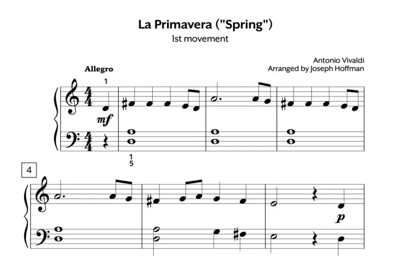
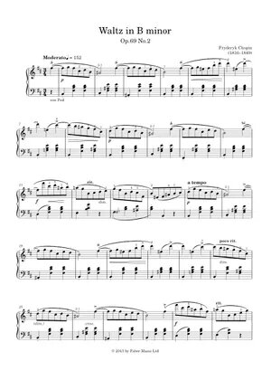
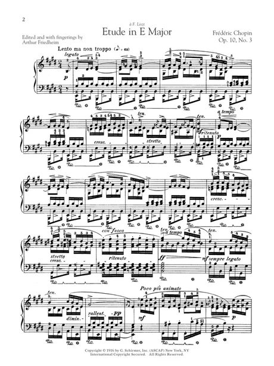

Voici un jeu très amusant et interactif de la part de l'équipe QuarteJuste contenant Jake Paradis et Thomas Keayle, deux étudiant à l'école Paul Desmarais. Nous sommes passionnés par la musique, étant tous les deux des musiciens qualifiés en piano, et Thomas le corps français, violon et ukulélé, et Jake étant clarinettiste, nous sommes excités de vous partager ce jeu éducatif.
Pour commencer le Jeu, il faut simplement cliquer sur le niveau de difficulté que vous voulez jouer. Parmi les choix vous avez facile, moyen et difficile. Elles ont toutes un aspect éducatif dans le domaine de la musique.
En appuyant sur la celle que vous voulez elle t’apportera à la page suivante avec le jeu elle-même.
L’objectif du jeu, lui-même, est de tester ta connaissance en musique et de t’amuser.
Suivez les instructions et trouvez la prochaine note de la pièce générée par notre code !!!
Facile |
Moyen |
Difficile |